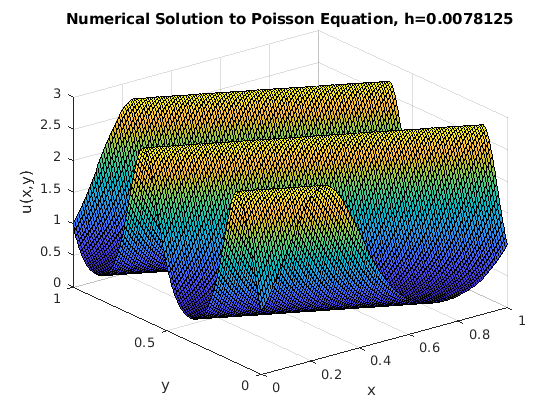
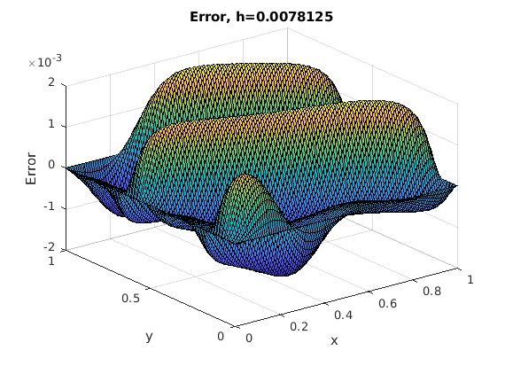

Contents
a1 = 0; b1 = 1;
m = (2^7)-1;
h = (b1-a1)/(m+1);
[x,y] = meshgrid(a1:h:b1);
f = @(x,y) 10*pi^2*(1+cos(4*pi*(x+2*y))-2*sin(2*pi*(x+2*y))).*exp(sin(2*pi*(x+2*y)));
g = @(x,y) exp(sin(2*pi*(x+2*y)));
uexact = @(x,y) g(x,y);
tol = 10^(-8);
idx = 2:m+1;
idy = 2:m+1;
ubs = feval(g,x(1,1:m+2),y(1,1:m+2));
ubn = feval(g,x(m+2,1:m+2),y(m+2,1:m+2));
ube = feval(g,x(idy,m+2),y(idy,m+2));
ubw = feval(g,x(idy,1),y(idy,1));
f1 = feval(f,x(idy,idx),y(idy,idx));
f1(:,1) = f1(:,1) - ubw/h^2;
f1(:,m) = f1(:,m) - ube/h^2;
f1(1,1:m) = f1(1,1:m) - ubs(idx)/h^2;
f1(m,1:m) = f1(m,1:m) - ubn(idx)/h^2;
b = reshape(f1,m*m,1);
I = eye(m);
ze = zeros(m,1);
e = ones(m,1);
T1 = spdiags([ze -2*e ze],[-1 0 1],m,m);
S1 = spdiags([e e],[-1 1],m,m);
T2 = spdiags([e -2*e e],[-1 0 1],m,m);
S2 = spdiags([ze ze],[-1 1],m,m);
D2x = (1/h^2)*(kron(I, T1) + kron(S1,I));
D2y = (1/h^2)*(kron(I, T2) + kron(S2,I));
A = D2x +D2y;
u = CG(A,b,tol);
u = reshape(u,m,m);
u = [ubs;[ubw,u,ube];ubn];
346 5.4475e-03
Plot solution
figure, set(gcf,'DefaultAxesFontSize',10,'PaperPosition', [0 0 3.5 3.5]),
surf(x,y,u), xlabel('x'), ylabel('y'), zlabel('u(x,y)'),
title(strcat('Numerical Solution to Poisson Equation, h=',num2str(h)));
figure, set(gcf,'DefaultAxesFontSize',10,'PaperPosition', [0 0 3.5 3.5]),
surf(x,y,u-uexact(x,y)),xlabel('x'),ylabel('y'), zlabel('Error'),
title(strcat('Error, h=',num2str(h)));
t2 = zeros(1,3);
t1 = [];
t4 = zeros(1,3);
t3 = [];
for ii = 1:3
u = CG(A,b,tol);
u = reshape(u,m,m);
tic
u = [ubs;[ubw,u,ube];ubn];
gedirect = toc;
t2(ii) = gedirect;
h = (b1-a1)/(m+1);
w = 2/(1+sin(pi*h));
tic
[usor,x,y] = fd2poissonsor(f,g,a1,b1,m,w);
gedirect = toc;
t4(ii) = gedirect;
end
t1 = [t1,t2];
t3 = [t3,t4];
fprintf('The number of iterations the CG code takes to converge, k = 346 with norm(rk) = 5.4475e-03 in an average time of %d\n',mean(t1));
fprintf('SOR method takes an average time of %d\n',mean(t3))
fprintf('Comparing the timing between CG and SOR, its seen that CG converges in a short time faster than SOR method.\n')
346 5.4475e-03
346 5.4475e-03
346 5.4475e-03
The number of iterations the CG code takes to converge, k = 346 with norm(rk) = 5.4475e-03 in an average time of 5.683333e-04
SOR method takes an average time of 2.355237e-01
Comparing the timing between CG and SOR, its seen that CG converges in a short time faster than SOR method.
 